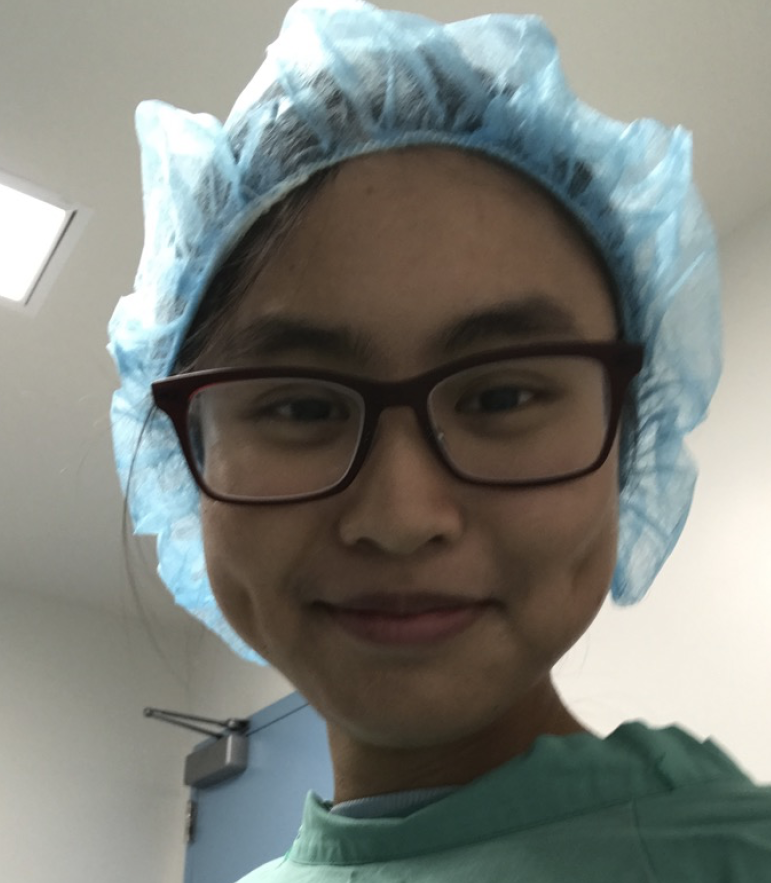

UCSF, Wang Lab
Undergrad researcher
I was an undergrad researcher in Wang Lab over at UCSF Department of Surgery. This lab focuses on cell to cell signaling responsible for arterial venous structure and function and is working towards the discovery of therapy for cardiovascular disease and cancer. It is there where I first learned mouse handling and how to perform transcardial perfusions.
